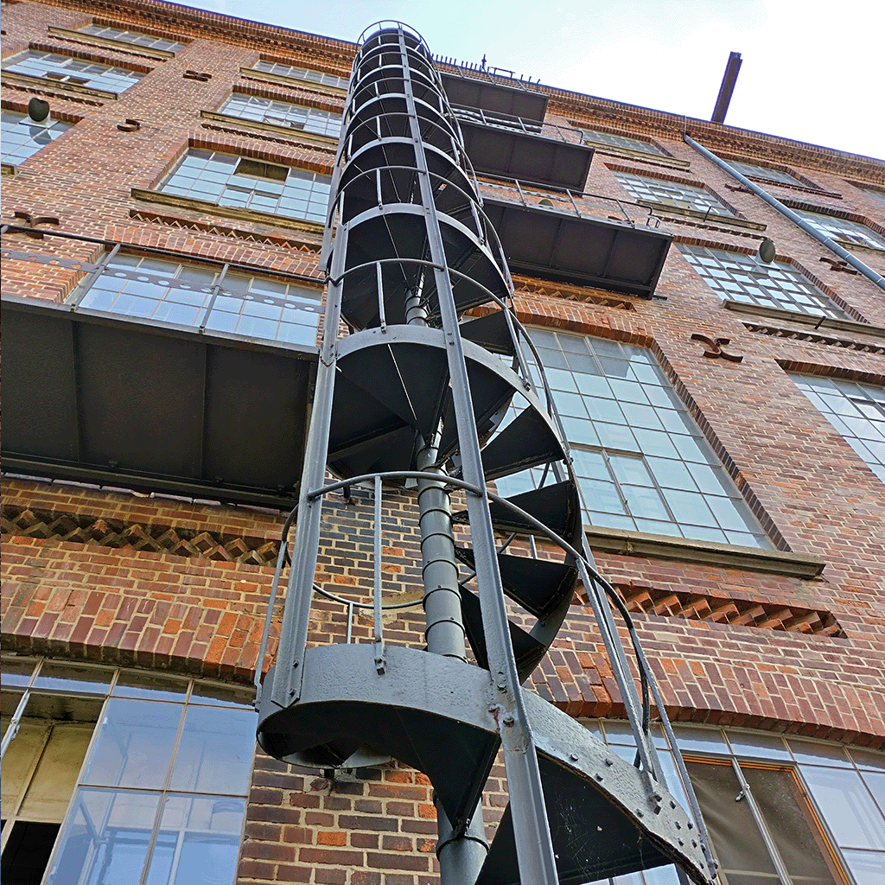

Nach einer erschöpfenden Anreise, geprägt von überfüllten Zugabteilen, dem fliegenden Bahnsteigwechseln und drängelnden Zugmenschen, kamen wir endlich im Hostel an.
Am nächsten morgen machten wir uns ausgeschlafen und gestärkt vom Hostel eigenen Frühstück auf den Weg in die Richtung der Leipziger Innenstadt.
Auf dem Weg in die Leipziger Innenstadt, befand sich eine atemberaubend bemalte Fassade.Übergang vom Augusteum zum Paulinum Leipzig
Und schon ging es los mit den ersten schnellen Skizen um die kurzen Eindrücke zu sichern.
Glasbrücke des PaulinumBlick vom Paulinum in Richtung Mdr Tower
Auf dem Weg durch die Fußgängerzone kam ich an Springbrunnen vorbei welche aussahen wie dünenartige Erhebungen mitten im gepflasterten Stein.
Ein paar Meter weiter, in Richtung Zentrum, landete ich in zahlreichen kleinen, passagenähnlichen Höfen, einer schöner als der andere.
Die Hofeingänge waren prunkvoll verziert mit Stuck und Ornamenten. die Höfe selber jedoch teilweise sehr modern ausgebaut.
SpringbrunnenInnenhöfe
Nach einer stärkenden Mittagspause ging es weiter ins Museum für Druckkunst Leipzig, wo wir einen Einblick in die Welt des Buchdruck zur Zeit der Industrialisierung bekamen.
SteindruckschnellpresseZweitourendruckmaschine
Schelter & Giesecke HA2Typograph
Neben diesen monumentalen Druck- und Typographmachinen, wurde uns zudem vorgeführt, wie Setzbuchstaben aus Blei gegossen werden, und selber drucken, durften wir auch.
Skizze eines gegossenen Bleiletterselbstgedruckte Karte
Am nächsten Tag ging es ins Museum für bildende Künste Leipzig.
Bereits der Eingangsbereich faszinierte mich, eine in Glas eingefasste Chromtür, ein Riss im Boden.
Außenansicht des MfbK LeipzigRiss im Boden vor dem Museum (als Beetanlage gedacht)
Um ehrlich zu sein fand ich weniger Gefallen an den alten Gemälden und Skulpturen, als an dem Gebäude selber und den stuckartigen Verzierungen der Rahmungen, welche ich skizzenhaft festgehalten habe.
Rahmenverziehrungen verschiedener Gemälde
Besonders auffällig fand ich Floralornamente, beispielsweise auch Eichenblätter oder Blumenandeutungen.
Diese standen meiner Meinung nach in starkem Kontrast zum Gebäude selbst, welches aus Beton, Stein und holzverkleideten Treppenhäusern, eingehüllt in eine Fassade aus Glas bestand.
Installation und Außenfassade im Obergeschoss des MfbKDachkonstruktion
Nach dem Museumsbesuch ging es erneut in die Leipziger Innenstadt.
Dieses mal habe ich besonderen Fokus auf Stuckornamente und Fassaden gelegt.
An der Außenfassade von einem Restaurant befand sich ein Stuckornament in der Form eines detailliert ausgearbeiteten Elefantenkopfes, welchen ich neben dem, sich im Restaurant befindendem Kronleuchter, skizzenhaft einfing.
OrnamentKronleuchter
Des weiteren entdeckte ich ein Wappen, mosaikartig eingearbeitet in das Kopfsteinpflaster auf dem Leipziger Marktplatz.
Fahrräder und Roller in einem Schaufenster habe auch skizziert.
|
MosaikZweiräder
Nach der anschließenden Stärkung bei Burgerking begaben wir uns in die Gallerie für Zeitgenössische Kunst, wo uns moderne Installationen erwarteten, mit denen ich, bis auf einen Nachbau des Lüftungssystem, als auch einer Transportkiste, in der ich eine Alltagsinstallation erkannte, nur wenig anfangen konnte.
Mein besonderes Highlight, war das Ehemalige Spinnereigelände, wo wir neben den alten Industriegebäuden auch zahlreiche Galerien und eine Druckwerkstatt/ Atellier im Stil der Industrialisierung besichtigen konnten.
Die ehemaligen Industriegebäude waren zum größten Teil aus Backstein gemauert und zogen sich über das gesammte gelände.
|
Lüftungsschacht Skizze 2

Alter Fabrikturm
|
alte Fassade neu verglast (Bürogebäude und Thinktank)Skizze des Spinnereigelände mit Blick auf Boesner
Interessant war auch zu sehen, wie die alten Fabrikgebäude teilweise noch intakt, teilweise umgenutzt, neu verglast und völlig ausgebaut wurden.
Das gesammte Gelände ist von Tunneln durchzogen, welche als Logistikwege genutzt werden, aber auch von Künstlern und Street artists genutzt werden.
Beim Verlassen dieser Gänge kommt man an einem alten Kino vorbei, von welchem man von außen lediglich den Neonschriftzug durch die Büsche erspähen kann.
|
Ausgang aus den TunnelnNeonschild des Kino
Hier noch eine Skizzensammlung auf einem Blatt mit Elementen des Spinnereimuseum.
|
Fazit
Zusammengefasst in dieser kleinen Dokumentation sind meine Highlights der Woche in Leipzig.
Einige Elemente und Galeriebesuche habe ich weg gelassen, da ich diese zwar als spannend, für meine Dokumentation jedoch nicht für sonderlich relevant gehalten habe.
Ich hatte eine schöne Zeit und habe neue Ecken von Leipzig kennenlernen dürfen, welche mir ein neues Bild der Stadt vermiteln konnten.
Für mich mitgenommen habe ich, dass man in Leipzig sehr viel Spaß haben kann und als Künstler oder Student sehr viele Möglichkeiten hat.
Neben diversen Grafikwerkstätten und Druckereien ist es relativ einfach Konatkt mit neuen Menschen und anderen Künstlern zu knüpfen.
Besonders Spannend an Leipzig finde ich die Kombination von alter und neuer Architektur, wobei teilweise Denkmalgeschützte Häuser um Neubauten erweitert werden, moderne Gebäude an klassische Grenzen, aber auch Alte Gebäude modernisiert und umgenutzt werden.
Es entsteht dadurch in meinen Augen eine Perfekte Symbiose aus Klassik und Moderne.
Leipzig war Toll!!!
Hier nun Abschließend noch ein Paar schöne und lustige Bilder zum Abschluss.